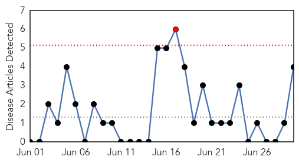
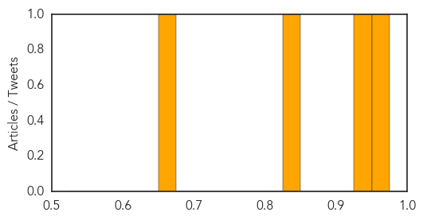
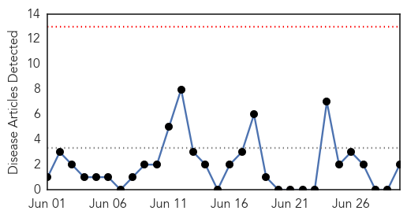
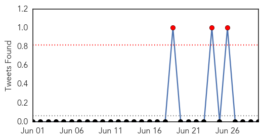
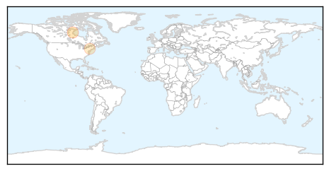

Meningitis
30-Day Web Trend
1 alerts, 0 warnings

30-Day Twitter Trend
0 alerts, 0 warnings

Article Locations
Article Confidences
Top Articles:
- 0.962
- Hand-foot-mouth disease outbreaks reported in Beijing : Society : Chinatopix
- 0.942
- Health Ministry says 16 Japanese Encephalitis cases since January
- 0.826
- Children to receive increased coverage against pneumococcal disease
- 0.671
- Bay County Jail goes on lockdown after inmate suspected of contracting meningitis
Top Tweets:
-
No tweets found for Jun 30, 2014
Influenza
30-Day Web Trend
0 alerts, 0 warnings

30-Day Twitter Trend
0 alerts, 0 warnings

Article Locations
Article Confidences

Top Articles:
Top Tweets:
-
No tweets found for Jun 30, 2014